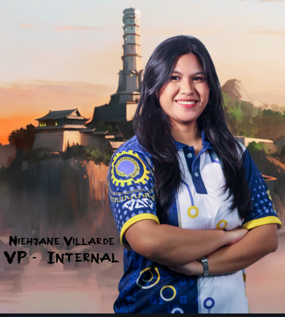
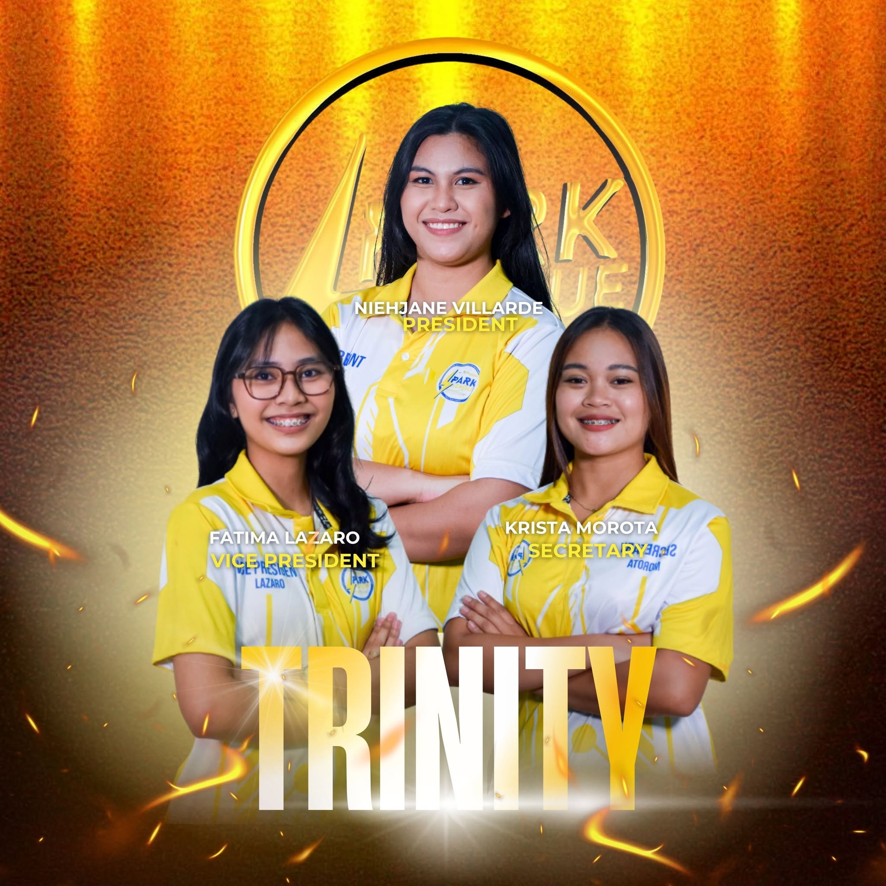
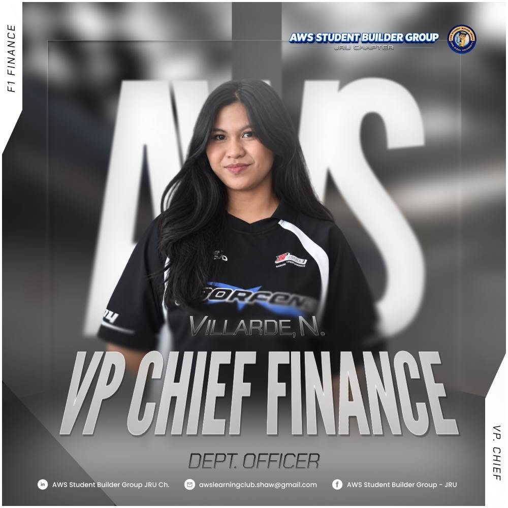
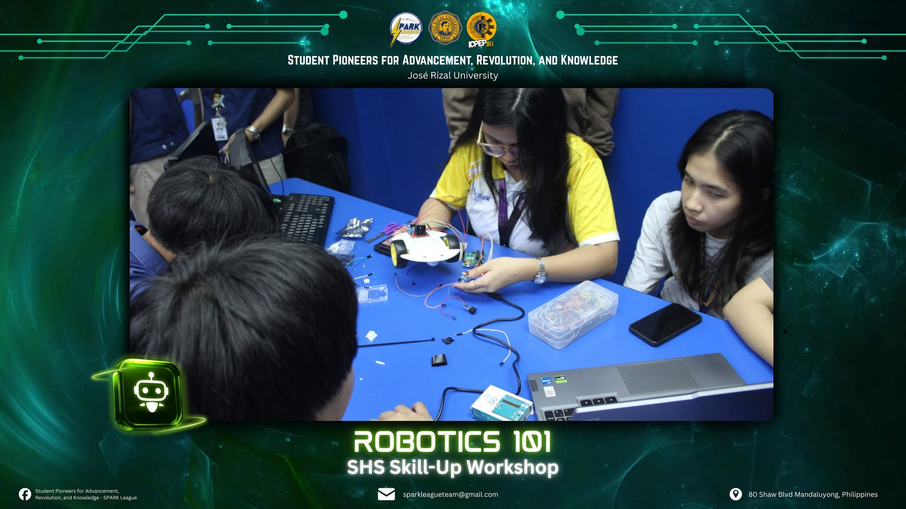
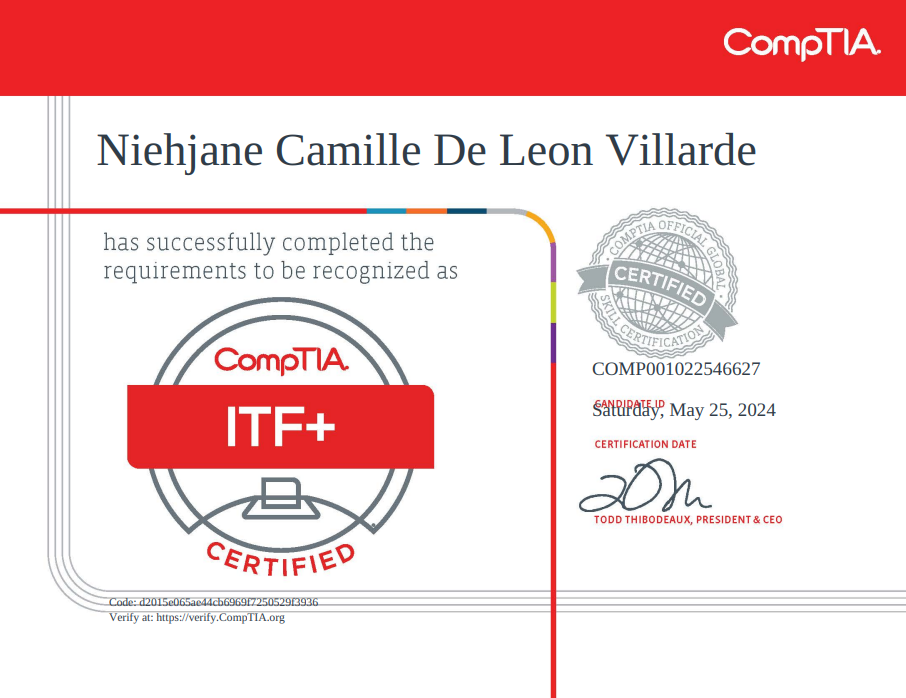
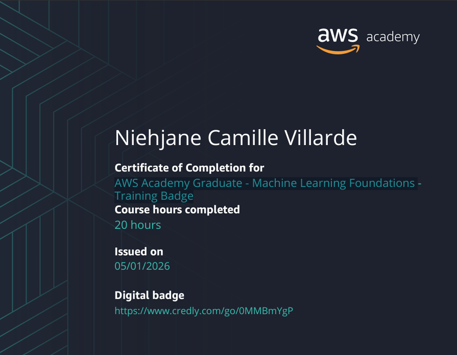
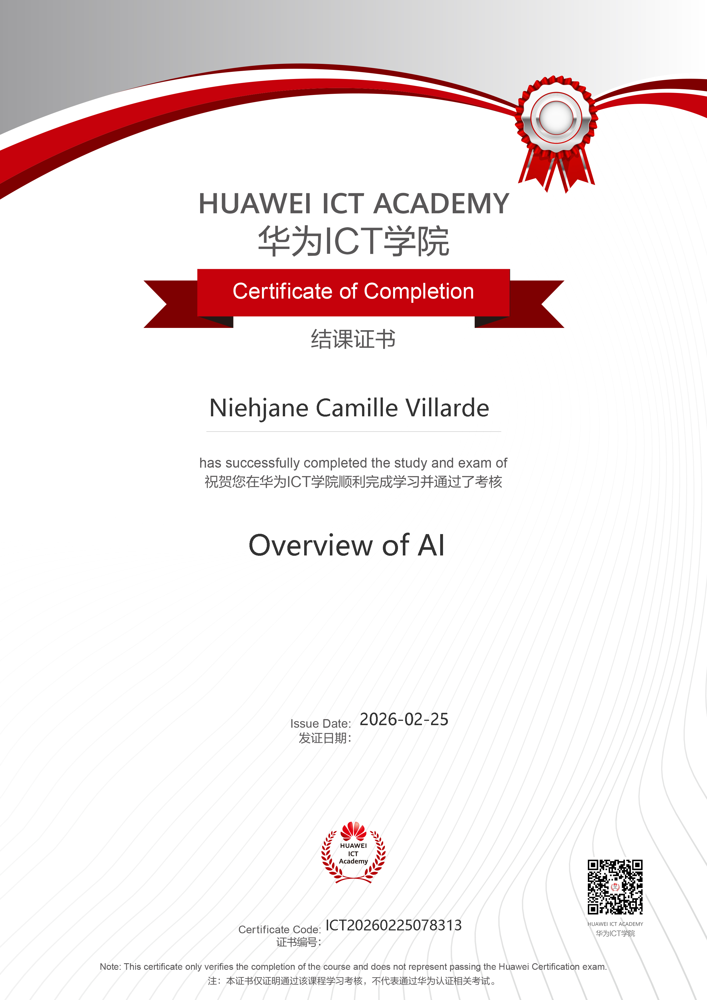
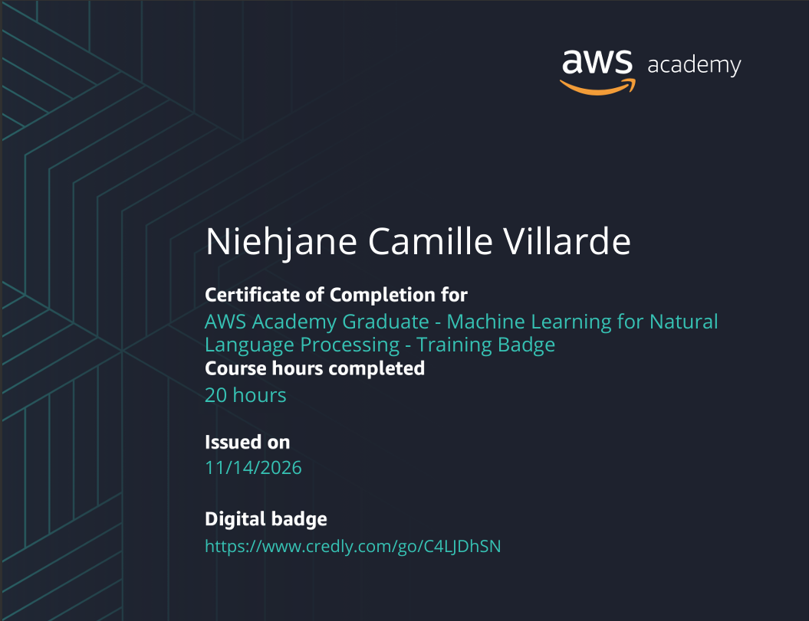

Niehjane CamilleD. Villarde
BUILD• LEARN• INNOVATE
Computer Engineering student at José Rizal University, building practical technology solutions across mobile, web, IoT, and machine learning.
Computer Engineering student at José Rizal University, passionate about turning ideas into working systems — from full-stack mobile apps and IoT hardware to computer vision and NLP pipelines. Developed a thesis on an IoT-based balance and tremor exercise board for Parkinson's care.
- Interests
- Artificial intelligence, embedded systems, IoT, mobile & web development, natural language processing
- Goals
- Build scalable, people-centered technology and contribute to meaningful, real-world projects while growing as a Computer Engineer.
- Contact
- niehjanevillarde1432@gmail.com
0947 515 3609
linkedin.com/in/niehjane-villarde
Featured Projects
Select any project on the left to see the full details on the right.
Full-Stack App · Flutter · Firebase
JRU Innovation Center Reservation Website
Completed
A reservation system for booking rooms and reserving electronic and computer components for student projects and laboratory activities at José Rizal University's Innovation Center.
Designed to simplify the reservation process and improve access to laboratory facilities and equipment for students.
Built the entire front end using Flutter and integrated Firebase for backend services and data management.
Hardware · Embedded Systems · Arduino
Arduino Learning Kit
Completed
An all-in-one Arduino kit designed for incoming students to learn how microprocessors work without needing to bring components one by one.
Provides a single complete unit consolidating all essential hardware for microprocessor learning, reducing friction for new learners.
Assembled and designed the kit to function as one complete, portable unit for microprocessor learning.
Computer Vision · Python · Deep Learning
AI Posture Correction App
Completed
An AI-powered workout pose correction system that provides real-time feedback on exercise form using computer vision.
Implemented CNN and pose estimation models to identify anatomical key points and detect posture deviations during exercise.
IoT · Mobile App · Thesis
IoT-based Balance & Tremor Exercise Board for Parkinson's with Blood Pressure Monitoring
Completed · Thesis Project
A system supporting Parkinson's care through balance and tremor exercise tracking and blood pressure monitoring, paired with a companion Android application and website.
Served as the main developer for the mobile application, website, and main system UI.
Built the app and website with Flutter/Dart, integrated Firebase, and designed UIs for device monitoring, balance and tremor exercise tracking, and blood pressure monitoring.
Full-Stack · Mobile App · Tech Startup
Save&Share (FarVent) — Food Redistribution Platform
Completed
A food surplus redistribution platform bridging the gap between food donors and beneficiaries through a localized, scalable mobile application.
Architected the platform and designed the technical infrastructure to bridge food donors and beneficiaries through a scalable, localized mobile app.
NLP · Machine Learning · Text Classification
Automated Structuring of Field Service Reports Using Information Extraction & Text Classification
Completed
An NLP pipeline that automates data extraction and text classification from handwritten field service reports, structuring unorganized text into database-ready records.
Co-developed the NLP pipeline. Engineered information extraction models using CRF and fine-tuned RoBERTa. Evaluated the impact of OCR noise on extraction accuracy.
Academic Work
Select any artifact on the left to see the full details on the right.
CPE C314 – Artificial Intelligence 2
Artifact 1: Compilation of Lab Activity
This compilation covers the lab activities and performance tasks I completed in CPE C314 – Artificial Intelligence 2, from classical machine learning all the way to a retrieval-based chatbot.
Lab 1.1 – Linear Regression: Predicted California housing prices using correlation analysis, imputation, and MinMax scaling. Achieved R² ≈ 0.63 and MAE ≈ $51K.
PTS2 – Feature Selection: Compared full model against RFE (R² 0.505) and PCA (R² 0.531) — both reduced versions scored slightly lower, which showed me simplification has a cost.
Lab 1 – NLP Regex: Text preprocessing using regex: lowercasing, punctuation removal, URL/hashtag extraction, stopword removal, and a spam/ham email pipeline.
Lab 2.1 – AWS SageMaker: Trained a LinearLearner to detect negative reviews on a 70,000-review dataset, with endpoint deployment and prediction testing.
Lab 5 – TF-IDF: Applied TF-IDF on a 30-sentence Taglish dataset with custom Tagalog and English stopwords, weight table, heatmap, and word cloud.
Lab 6 – Sentiment Analysis: Compared VADER with TF-IDF classifiers (Naive Bayes, Logistic Regression, Linear SVM) on customer reviews.
Lab 8 – Chatbots: Built rule-based, retrieval-based (TF-IDF + cosine similarity), and ML-based (MLP intent classifier) chatbots.
PT3 – NLP Pipeline: Full Taglish pipeline with language detection, tokenization, stemming, lemmatization, and a custom 218-word stopword corpus.
Lab 9 – RAG Chatbot & NER: Scam-aware RAG chatbot over Philippine anti-scam documents using MiniLM embeddings and flan-t5. Hit 100% top-1 retrieval on 12 in-scope questions and refused 5/5 out-of-scope ones.
These labs changed how I think about AI. I used to treat models as black boxes — now I understand why each decision matters. The regression labs taught me that simpler isn't always better, since removing features actually hurt my scores. The NLP labs showed me how much preprocessing affects the final output, especially when working with Taglish where standard tools don't work out of the box. Lab 2.1 was my first time deploying a model on the cloud, which felt very different from just running a notebook. Lab 9 was the most rewarding — building a chatbot that could refuse wrong questions taught me that knowing a system's limits is just as important as its capabilities.
CPE C314 – Artificial Intelligence 2
Artifact 2: IEEE Journal Project Documentation
An IEEE-format research paper on automating how field service reports reach the CRM at Scientific Biotech Specialties, Inc. (SBSI). Field Service Engineers write their reports by hand and then retype them into Bitrix, which means double handling, transcription mistakes, and delays. The paper proposes a pipeline that reads the handwriting with TrOCR, then uses CRF models and a fine-tuned RoBERTa model to pull out key details and classify the text. The output is a structured record that a person can review before it goes into Bitrix. We built a working prototype with PaddleOCR and tried it on 20 real service reports, where reviewing a record took about 7 minutes on average.
Writing in IEEE format pushed me to back every claim with a source or a measured result. The hardest part was being honest about scope — we designed a full comparison of CRF and transformer models but only completed the OCR pilot, so the results had to be worded carefully. Working on the extraction models also showed me how errors from the OCR stage carry into every later step, so a pipeline is only as strong as its weakest stage. This supports my goal of building practical, people-centered systems where a person can still check the output.
CPE C314 – Artificial Intelligence 2
Artifact 3: Demo Video of Working Project
This is a working prototype of the NLP pipeline I helped build for CPE C314. It takes a photo of a handwritten field service report and runs it through PaddleOCR to generate a draft, then brings up a structured review screen where an operator can go through each extracted field, correct anything the model got wrong, and confirm before saving. There's also a rule-based chatbot for querying and summarizing saved records, which mirrors how a Bitrix entry workflow would look. We tested it on 20 actual reports from SBSI — checkbox fields like job type and service status hit up to 65% exact agreement, while the narrative fields needed more hands-on correction.
Running the pipeline on real handwritten reports made everything click for me. The raw OCR output had an 89.5% word error rate, which was honestly surprising at first — but it's what made the human-in-the-loop design feel necessary rather than optional. Designing the review interface changed how I thought about the problem. I stopped asking "can the model get it right?" and started asking "how do we make correction fast enough that people will actually use it?" That shift felt important. For me, the most valuable part was learning that a system doesn't have to be perfect to be useful — it just has to make the hard parts easier.
Organizations
Select any organization to view roles and responsibilities.
Student Organization · Engineering
Institute of Computer Engineers of the Philippines, SE — JRU Chapter
2024 – Present
- Vice President Internal (2026–2027)Manage organizing seminars and events, including the General Assembly and CSE Week.
- Director of Publication (2025–2026)Created publication materials for posting — posters, PowerPoint presentations, and certificates.

Student Organization · Innovation
Student Pioneers for Advancement, Revolution, and Knowledge — SPARK League
2025 – Present
- President (2026–2027)Spearheaded pitch competitions involving more than 100 students to drive innovation within the student body.
- Treasurer (2024–2025)Managed the organization's budgets and proposals, and helped organize events and seminars.

Student Organization · Cloud & Technology
AWS Student Builder Group — JRU Chapter
2025 – Present
- Vice-Chief Finance Officer (2026–2027)Manage the organization's budgets, proposals, and help organize events and seminars.

Teaching & Mentorship
Technical Instructor & Mentor
2025 – 2026
- Academic Tutor — Internet of Things (2025)Tutored students in Internet of Things concepts and hands-on microcontroller work.
- Mentor — Robotics Workshop (2026)Mentored students through a robotics workshop, guiding builds and problem-solving.

Training & Certificates
Select any credential on the left to inspect its details on the right.
CompTIA · 2024
CompTIA ITF+
IT Fundamentals Certification
Foundational IT skills and knowledge certification covering basic IT concepts, infrastructure, software, security, and troubleshooting.
CompTIA — 2024

AWS Training Badge · 2025
Machine Learning Foundations
AWS Training Badge
Covers the fundamentals of machine learning on AWS, including core ML concepts, services, and workflows.
Amazon Web Services (AWS) — 2025

AWS Training Badge · 2025
Cloud Foundation
AWS Training Badge
Covers core cloud computing concepts and AWS services including compute, storage, networking, and security fundamentals.
Amazon Web Services (AWS) — 2025
Huawei ICT Academy · 2026
Overview of Artificial Intelligence
Huawei ICT Academy
An overview of artificial intelligence concepts, history, and applications, presented through the Huawei ICT Academy curriculum.
Huawei ICT Academy — 2026

AWS Training Badge · 2026
Machine Learning for Natural Language Processing
AWS Training Badge
Specialized training in applying machine learning techniques to natural language processing tasks on AWS.
Amazon Web Services (AWS) — 2026

Skills
Competencies I have built so far. This list grows with my CpE journey.